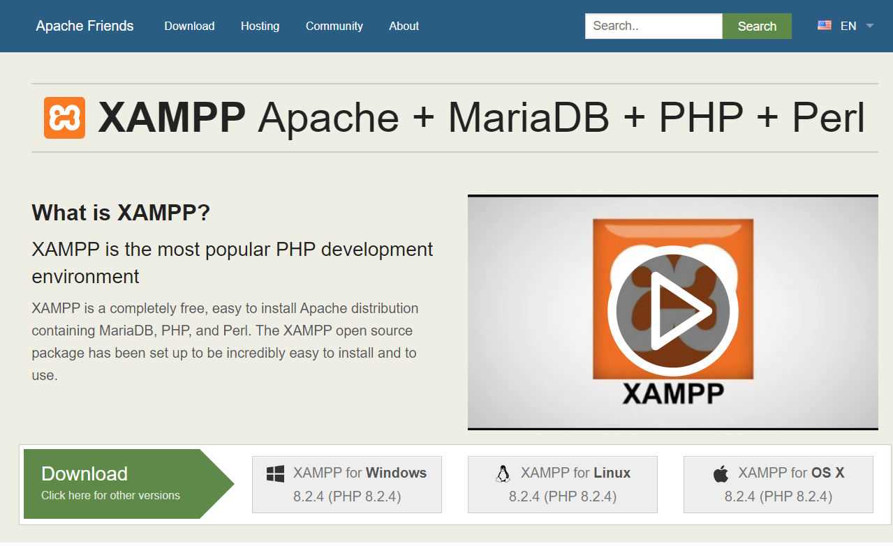
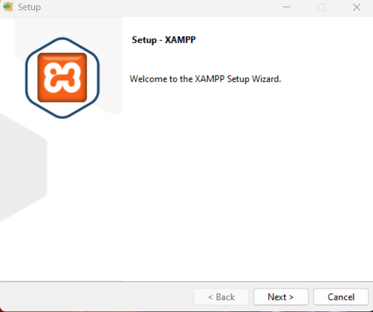
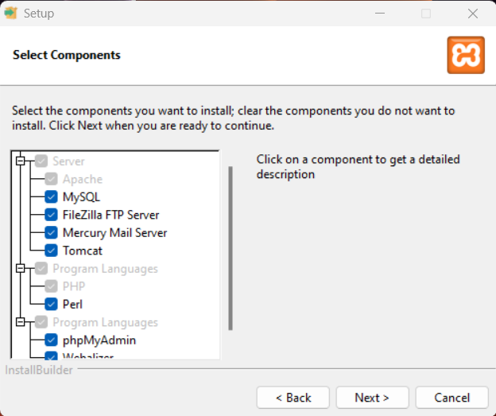
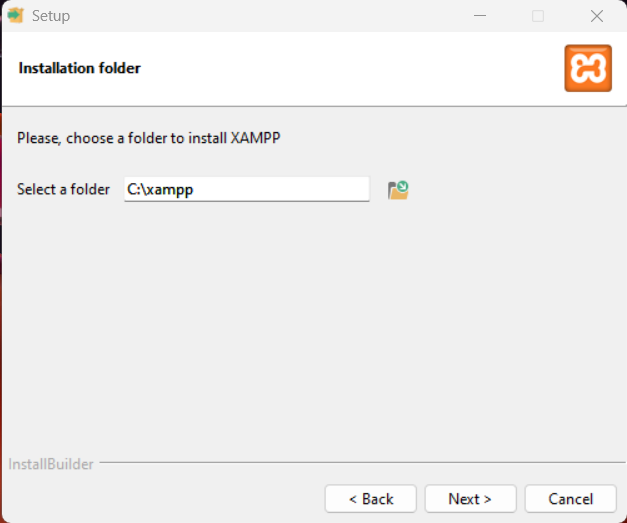
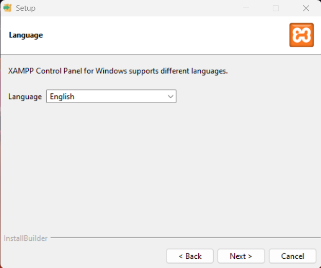
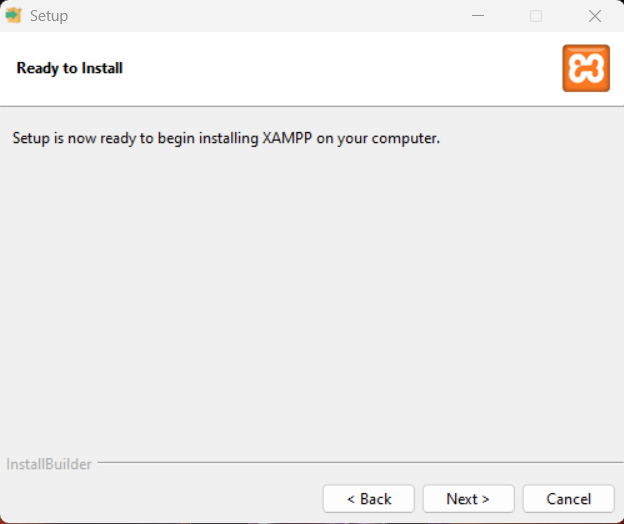
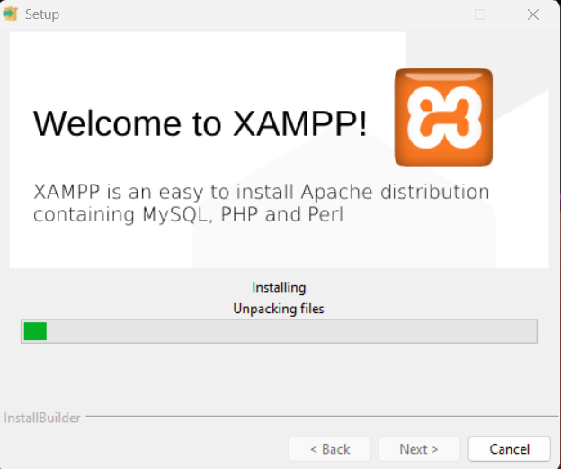
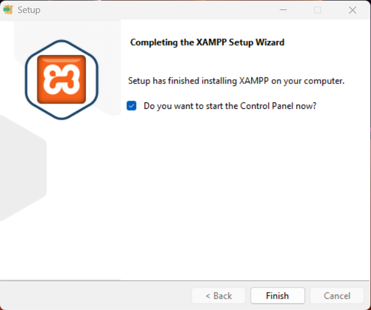
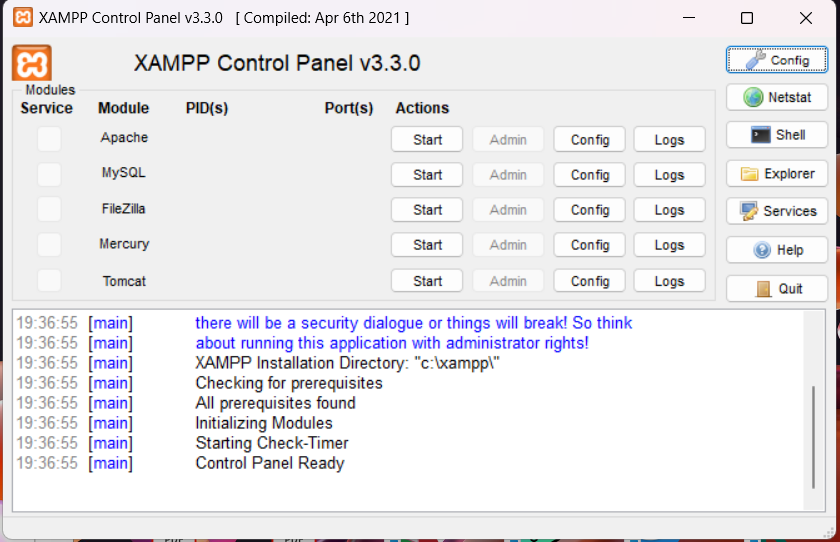

Lab 1: Installation and Requirement specification
Download
We will use PHP as back-end programming language and MySQL as a database
management system. To make our work easier, we will use XAMPP, which is
a free and open-source cross-platform web server solution stack package.
To download XAMPP, go to the following website:
https://www.apachefriends.org/
Download the version of XAMPP for your operating system.

After downloading XAMPP, follow the installation instructions below based on
your operating system.
Windows
-
Get into your downloaded directory and execute the installer file. You will see a Welcome Screen. Click Next button to continue.
 -
Select/unselect the components based on your preference. But I will advise you to leave the recommended ticks. Click Next button to continue.
 -
The installation directory is C:\xampp by default. You can choose another directory. But it is preferable to leave it as it is. Click Next button to continue.
 -
Choose your preferred language. Click Next button to continue.
 -
Now click Next button to start the installation.
 -
Just wait!!
 -
Done. Click the Finish button to close the installer.

Linux
-
Get into the ~/Downloads/ or your downloaded directory:
cd ~/Downloads/
-
Now, make the above-downloaded file executable by changing the execution bits into -rwxr-xr-x:
sudo chmod 755 xampp-linux-x64-7.4.29-1-installer.run -
Now, execute that installer file:
sudo ./xampp-linux-x64-7.4.29-1-installer.run -
You will go through the same installation process as windows. Except that the installation directory in Xampp is /opt/lampp/ or /opt/xampp/.
-
To start Xampp in Linux, execute the /opt/lampp/lampp start command:
[user@computer ~]$ sudo /opt/lampp/lampp start
[sudo] password for user:
Starting XAMPP for Linux 8.1.6-0...
XAMPP: Starting Apache...ok.
XAMPP: Starting MySQL...ok.
XAMPP: Starting ProFTPD...ok.If the above command does not work, try executing /opt/lampp/xampp start because in some versions of xampp, words lampp and xampp are interchanged.
Start XAMPP
To start XAMPP, execute the xampp-control.exe file in the XAMPP installation directory. You will see the XAMPP control panel. Click the Start button for Apache and MySQL.
To confirm if xampp started and everything worked fine, open up your favorite web browser and go to the website http://localhost. You should see the XAMPP welcome page.
Classwork: Requirements specification
Instructions:
- Write a README file for the website you are going to create in this semester. The README file should include a clear description of the services you are going to provide, the target audience, and the goals of the website.
- Your teacher will validate the README file or ask you to make some changes.
- Draw a site map for the website you are going to create in this semester. The site map should include all the pages you are going to create.
- Divide the workload among your team members. Each team member should be responsible for a specific part of the website. The division of work should be included in the README file. This will help you to avoid conflicts and misunderstandings among team members. It will also help you to complete the project on time. Your teacher will validate the division of work or ask you to make some changes.
- The course teacher will create a GitHub repository for your team. You will need to upload the README file and the site map to the GitHub repository. The repository should be shared with your teacher and your team members.
Requirements specification questions:
-
Who is this website for?
-
Tergeted individuals:
What is the age range of your target audience?
Will your site appeal to more women or men? What is the mix?
Which country do your visitors live in?
Do they live in urban or rural areas?
What is the average income of visitors?
What level of education do they have?
What is their occupation?
How many hours do they work per week?
How often do they use the web?
What kind of device do they use to access the web?
-
Tergeted companies:
What is the size of the company or relevant department?
What is the position of people in the company who visit your site?
Will visitors be using the site for themselves or for someone else?
How large is the budget they control?
-
-
Why people visit this website?
-
Key motivations:
Are they looking for general entertainment or do they need to achieve a specific goal?
If there is a specific goal, is it a personal or professional one?
Do they see spending time on this activity as essential or a luxury?
-
Specific goals:
Do they want general information / research (such as background on a topic / company), or are they after something specific (such as a particular fact or information on a product)?
Are they already familiar with the service or product you offer or need to be introduced to it?
Are they looking for time sensitive information, such as the latest news or updates on a particular topic?
Do they want to discover information about a specific product or service to help them decide whether to buy it or not?
Do they need to contact you? If so, can they visit in person (which might require opening hours and a map)? Or might they need email or telephone contact details?
-
-
What visitors are trying to achieve?
-
Key tasks and motivations:
-
List of reasons why people visit the website:
-
-
What information visitors need to acheive their goals?
-
Will visitors be familiar with your subject area / brand or do you need to introduce yourself?
Will they be familiar with the product / service / information you are covering or do they need background information on it?
What are the most important features of what you are offering?
What is special about what you offer that differentiates you from other sites that offer something similar?
Once people have achieved the goal that sent them to your site, are there common questions people ask about this subject area?
-
-
How often will people visit the website?
-
Site maps: